Apresentação Daniel Laurindo
github: laurindo
twitter: @dslaurindo
Incentivar o desenvolvimento de jogos em nosso estado, o espírito de empreendedorismo, inovação e com isso dar mais visibilidade para o Nordeste e o Brasil.
Indie é a abreviação de "independente", é uma pessoa ou um grupo de pessoas sem apoio financeiro que focam em inovação. E aqui no Brasil isso se torna mais forte ainda porque não temos linhas de créditos específicas e nem um apoio maior.
Todos esses games indie citados acima, foram criados por no máximo 2 pessoas.
Antes a gente pensava em ganhar uma boa "grana" em nossa área, porém, hoje em dia já podemos pensar mais além.
É inegável que o interesse por jogos eletrônicos vem aumentando no Brasil. A indústria do gênero é tão grande no País que, em 2012, foi maior que a do Reino Unido, Espanha e Alemanha.
Será que é verdade mesmo?
Não desista no seu primeiro game.
Muitas vezes criamos um game achando que será inovador, divertido, difícil, com um design perfeito e que vai render aí muitos downloads e consequentemente um bom ganho diário. Porém, o retorno acaba não sendo como esperado.
Até mesmo a Rovio teve que produzir 50 jogos para fazer sucesso.
Não faça um game grandioso, tente começar simples.
FEZ - um jogo indie que começou grande...
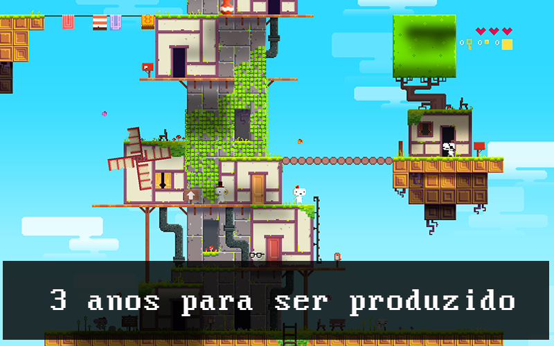Vá até o fim!!!!!
Esse é o ponto mais complicado para quem não conhece. É o que faz com que as pessoas desistam antes mesmo de começar.
Compre spritesheets, não investe tanto e ainda lhe dá mais tempo pra lógica do game
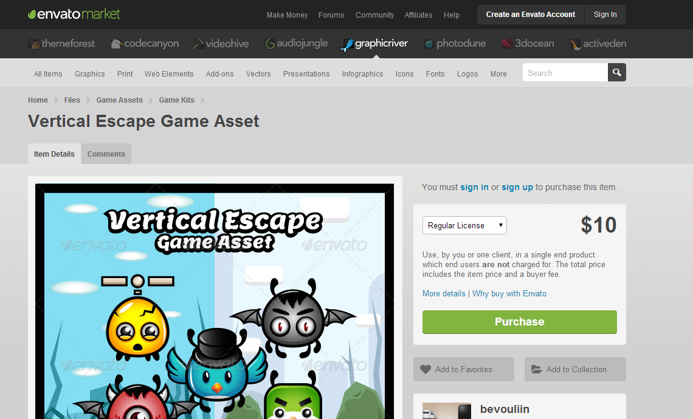Compre/Baixe loops e sons, valor de investimento é pequeno ou até mesmo gratuito e você tem sons de qualidade em seu game.
Voltando um pouco... A categoria mobile é o segmento de jogos digitais que mais cresce.
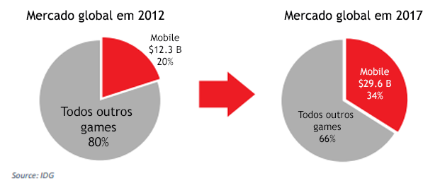Na web nós temos uma gama de frameworks para podermos elaborar nossos próprios jogos.
Boo é linguagem de código aberto que foi criada por um brasileiro chamado Rodrigo Barreto de Oliveira.
Lua também foi criado no Brasil pela PUC-RJ
créditos:
10 dicas de um game de sucessoCréditos: Rafael Rodrigues
Vai criar a história do game? Então não invente demais, sempre pense no simples.
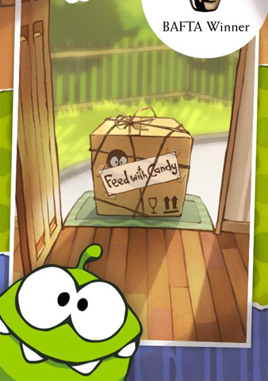Simples de jogar
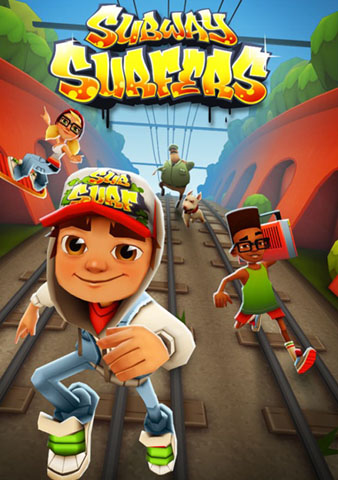Livres de derrotas
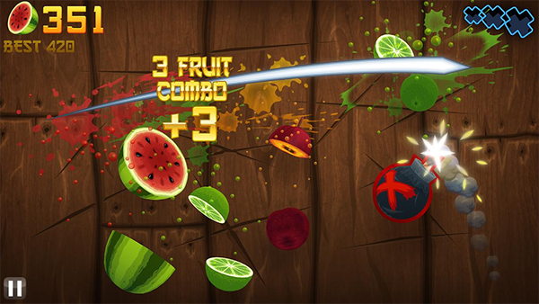Feedbacks constantes
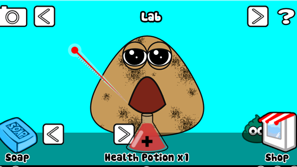Muitas e muitas fases
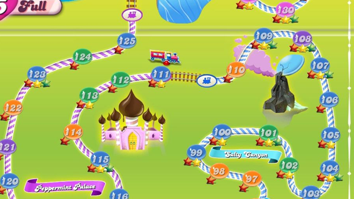Lembre do hardcore
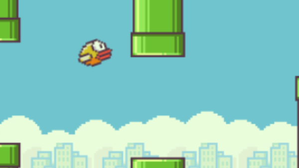Muitos achievements
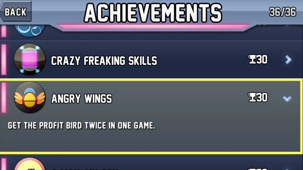Física Lúdica
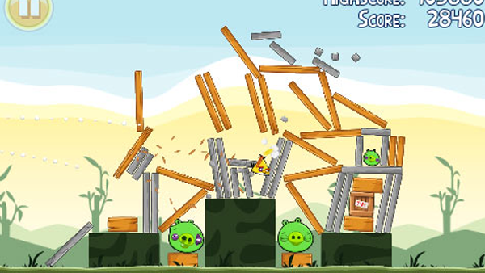Be cute
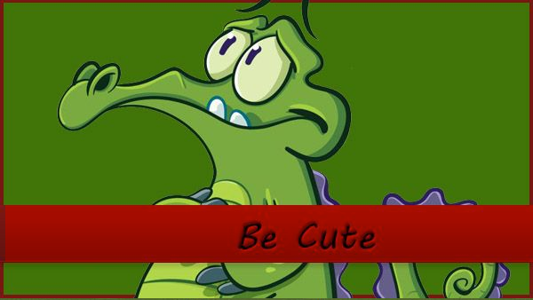